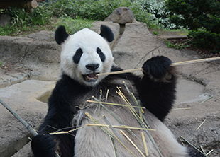
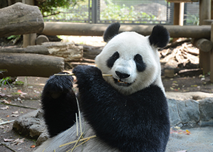

2005年8月16日、臥龍保護センター生まれ
体重：およそ135Kg

リーリーは、気の優しい大らかな性格のオス。初めて目にする物や聞き慣れない音には、 神経を集中させて確認する慎重派ですが,危険がないとわかるとすぐに落ち着きを取り戻します。 走り回ったり、木に登ったり、ときに活発に動き、たくましさも見せるパンダです。
2005年7月3日、臥龍保護センター生まれ
体重：およそ120kg

シンシンは、怖いもの知らずの性格で、はじめての物や人でもためらわずに近づいていきます。 また、リーリーとちがって、シンシンは甘いものがきらい。 ただし、竹に関してはかなりの「グルメ」で、種類や質によって食べる部分をこまめに変えるこだわりの持ち主です。